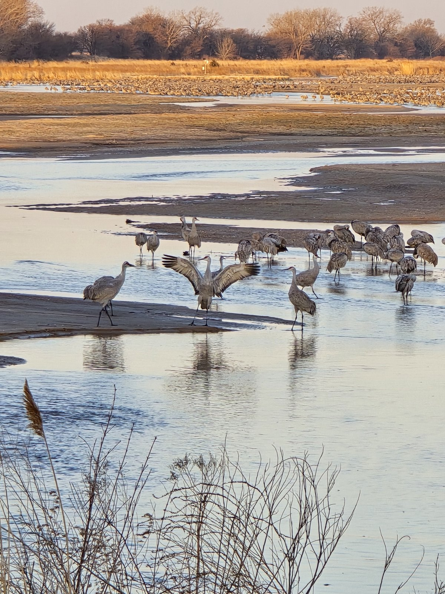
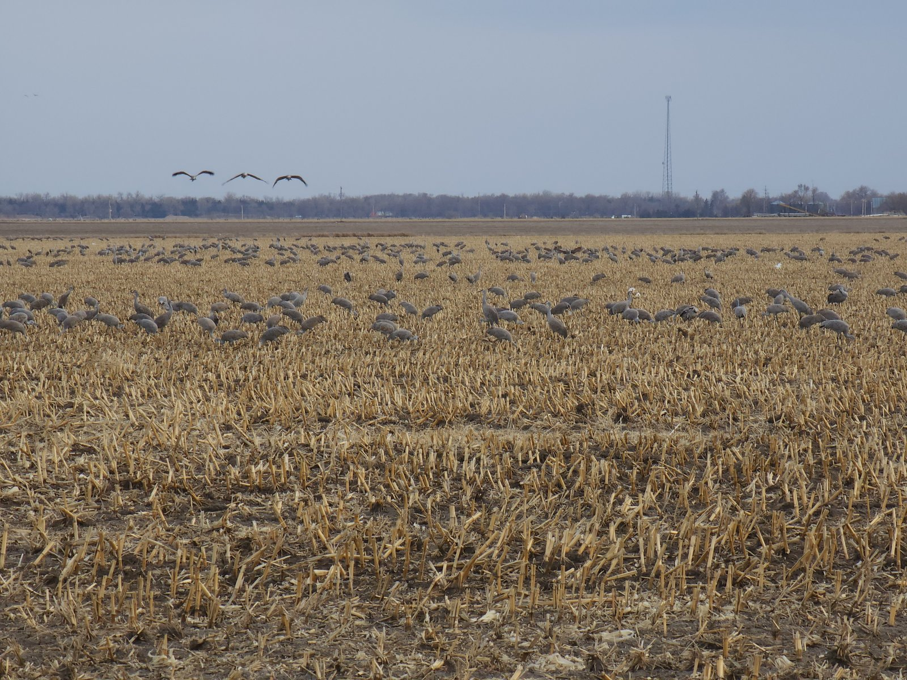
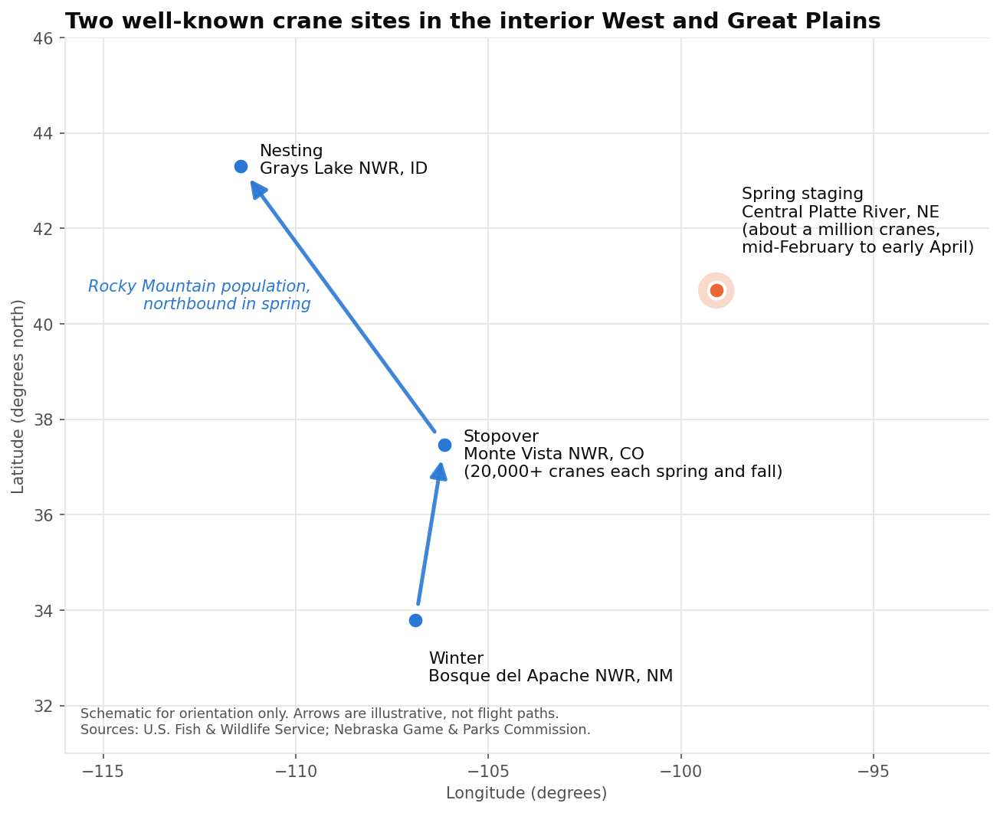
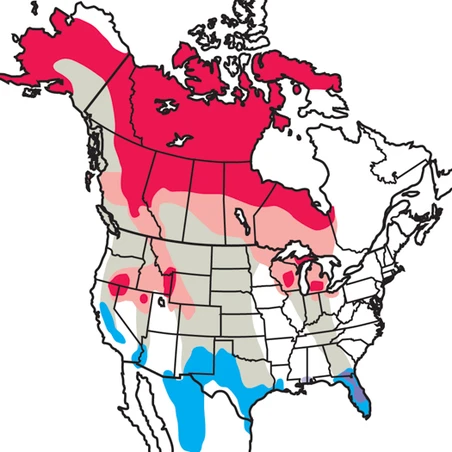
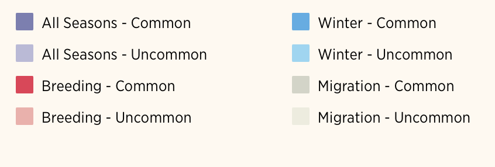
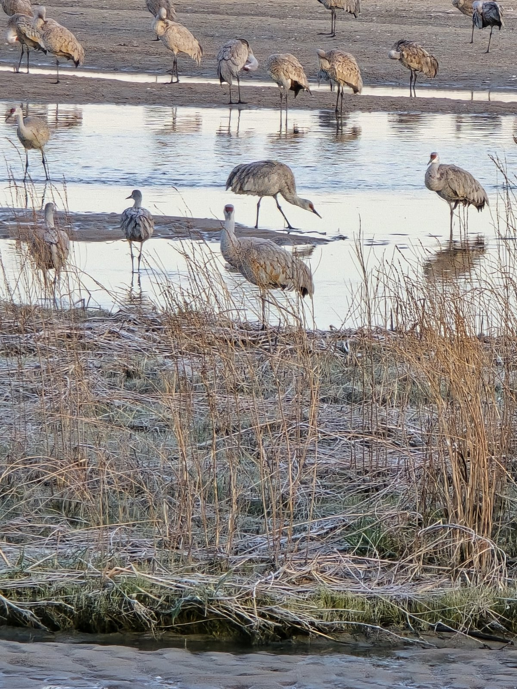
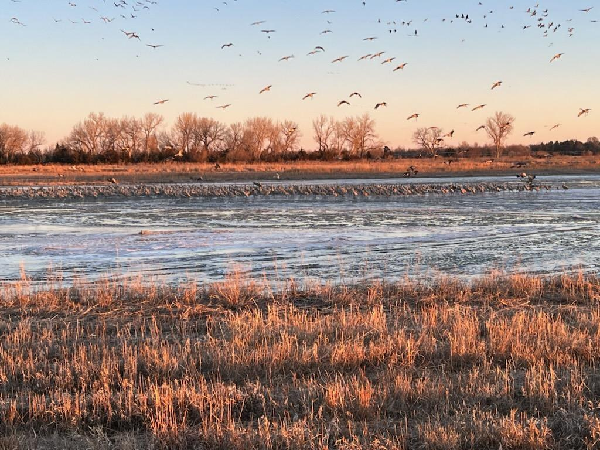
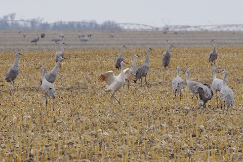

Introduction
Every spring, about a million sandhill cranes stage along the Platte River in central Nebraska, which the Nebraska Game & Parks Commission describes as the largest gatherings of cranes in the world (Nebraska Game & Parks Commission). Their numbers build from mid-February through early April and peak in mid-to-late March. The river works as a rest stop: at night the birds roost in shallow water about six inches deep, and by day they feed in nearby cornfields and meadows, typically within five miles of the river. Corn makes up about 90 percent of the diet during the stay, and collectively the cranes eat nearly 1,600 tons of it. Sandhill cranes are also ancient birds, with fossil evidence placing them in Nebraska more than nine million years ago. Individuals have been known to live more than 25 years in the wild, and, according to the Cornell Lab of Ornithology, they mate for life and usually lay two eggs although typically only one chick survives to fledge (All About Birds). Five subspecies exist, two migratory and three non-migratory, and along the Platte roughly 80 percent of the birds are lesser sandhill cranes and the remaining 20 percent are greater sandhill cranes. Across the continent, Partners in Flight estimates the breeding population at 560,000, the species is rated as a low conservation concern, and its numbers increased a little over 4 percent per year between 1966 and 2019. That success is not universal, because the Mississippi subspecies is endangered and the isolated Florida population is a concern. This mixture of abundance, deep evolutionary history, and local fragility makes the sandhill crane a useful species for understanding how migratory birds respond to a changing landscape.




Migration is not limited to the Platte. Farther west, the Rocky Mountain population of greater sandhill cranes winters near Bosque del Apache National Wildlife Refuge in New Mexico, stops at Monte Vista National Wildlife Refuge in Colorado's San Luis Valley, and nests at Grays Lake National Wildlife Refuge in southern Idaho (U.S. Fish & Wildlife Service). More than 20,000 cranes pass through the San Luis Valley each spring and fall, stopping between February and April with numbers peaking in March. The valley's geography supports them, because spring snowmelt drains from the mountains onto the valley floor and sustains a patchwork of wetlands and shallow ponds. Grain fields on the refuge are mowed in spring to provide food at a time when food is scarcer on private lands. A study that followed 106 cranes fitted with GPS transmitters between 2015 and 2022 found that arrivals in the valley peaked around February 21 in spring and October 13 in autumn (Vanausdall and colleagues, Frontiers in Ecology and Evolution, 2024). The same study found that autumn stopovers were longer and more variable than spring stopovers, which suggests that cranes hurry in spring and conserve energy in autumn. In spring, cranes tended to leave when crosswinds were lower and barometric pressure was higher, and in autumn they left with stronger tailwinds, weaker crosswinds, and more surface water available. In other words, wind, air pressure, and water all help decide when a crane moves on. Because these conditions change from year to year, the timing of a stopover is a moving target, and even a few days of difference matters to the refuge managers, farmers, and festival organizers who plan around the annual return.





Cranes depend on habitat that people have reshaped. Historically, the Platte offered wide, braided, mostly treeless river channels bordered by fertile wet meadows (Audubon Great Plains). Shallow water at roost sites matters because it serves as an early predator warning system at night. Changes began as European settlers made their mark on the river through water management and vegetation removal. Reservoirs now control when water is released, which reduces the natural spring floods that once scoured sandbars clear. Invasive plants such as Phragmites spread at an alarming speed and narrow the channels that cranes need. Keeping the river crane friendly is expensive, because clearing sandbars with heavy equipment costs up to $16,000 per mile and controlling Phragmites costs the Platte Valley Weed Management Area almost $600,000 every year. Conservation is a collaborative effort, including more than twenty years of work through the Platte River Recovery Implementation Program and land management at the Rowe Sanctuary that uses prescribed burns, grazing coordination, and tree removal. In Colorado, the health of the San Luis Valley's wetlands is tied to mountain snowpack, so the water that reaches the valley in spring shapes the habitat available to cranes. Every change to a river, a farm field, or a winter storm has the potential to shift where and when cranes stop, and those shifts reach the towns and economies that host them.




Scientists have monitored cranes for decades. The Crane Trust has flown aerial surveys along an 85-mile stretch of the Central Platte River between Chapman and Overton, Nebraska, since 1998, and standardized weekly flights have been in place since 2002 (Crane Trust). Each survey begins about 30 minutes before sunrise, when cranes are still gathered on the river, and produces a reliable population index rather than an exact count. Beginning in 2024, fall and winter surveys were added because increasing numbers of cranes are using the river outside the traditional spring period. Long-term records elsewhere show that migratory patterns can move. In the eastern population, Christmas Bird Count records from 1966 to 2013 revealed a significant northern shift in the average latitude of wintering cranes, and the researchers noted that weather variation, long-term climate change, and land use may all interact to produce such changes (International Crane Foundation). Whooping cranes offer a striking example: an analysis of 2,806 observations from 1942 to 2016 found that spring migration began about 22 days earlier in 2016 than in 1942, and that cranes appeared to respond to warming temperatures rather than to day length, which has not changed (Audubon). Their fall migration started about 21 days later over the same period, although no temperature trend was found in the fall data. Earlier arrival could give chicks more time to develop, but it also risks arriving before food is available and meeting late-winter storms. Community science now adds enormous volume, because eBird, launched in 2002 by the Cornell Lab of Ornithology, holds more than 2 billion bird sightings from over 150 million checklists submitted by more than one million users, and its data have supported more than 1,250 published studies (Cornell Chronicle). Tools such as the International Crane Foundation's Sandhill Crane Finder already draw on those sightings to help people locate cranes, yet many questions remain about how sandhill crane timing at different stopovers has changed, how weather and drought shape it, and whether reports from birdwatchers can reveal patterns that formal surveys miss.
From the field
The photograph and video below show the birds and river habitat described above.


Ten questions about sandhill crane migration
- Has the timing of the spring peak of sandhill cranes at major stopovers, such as the Central Platte River in Nebraska and the San Luis Valley in Colorado, moved earlier or later over the past fifteen years?
- Do warmer late-winter and early-spring temperatures go together with earlier appearances of large numbers of cranes?
- How does the timing of migration at the Platte River differ from the timing in the San Luis Valley, and do the two stopovers respond to the same conditions?
- Are cranes being reported farther north during winter now than in the past, as happened with the eastern population?
- Do daily temperature and precipitation help explain the days on which the largest numbers of cranes are reported at a stopover?
- Are more cranes being reported outside the traditional spring window, such as in fall and winter, at the places where they have long stopped in spring?
- Where the land around a stopover has been developed, farmed more, or has gained wetland over the past fifteen years, have crane reports moved toward or away from those places?
- Which states and provinces receive the largest concentrations of cranes in each season, and does that pattern shift from year to year?
- Can the part of the annual cycle a sighting belongs to, such as spring migration, fall migration, or wintering, be recognized from where and when the sighting was made and the weather that day?
- How much of the apparent growth in crane sightings over time reflects more birdwatchers submitting more reports rather than more cranes?
Photo and video credits
- Photos: Kyla (sandbar and roost scene, feeding in a cornfield, cranes at the water's edge). Photos: Cody McGregor (cranes in stubble, cranes over shallow, icy water).
- Video: Kyla (flock lifting off at sunrise).
References
- Nebraska Game & Parks Commission. Sandhill Cranes. https://outdoornebraska.gov/learn/nebraska-wildlife/nebraska-animals/birds/sandhill-cranes/
- Cornell Lab of Ornithology. Sandhill Crane Life History, All About Birds. https://www.allaboutbirds.org/guide/Sandhill_Crane/lifehistory
- U.S. Fish & Wildlife Service (2026). Spring break for sandhill cranes in Colorado. https://www.fws.gov/story/2026-04/spring-break-sandhill-cranes-colorado
- Vanausdall, R. A., et al. (2024). Time of year and weather influence departure decisions of sandhill cranes at a primary stopover. Frontiers in Ecology and Evolution. https://www.frontiersin.org/journals/ecology-and-evolution/articles/10.3389/fevo.2024.1279279/full
- Audubon Great Plains. Keeping the Crane River “Crane Friendly.” https://www.audubon.org/great-plains/news/keeping-crane-river-crane-friendly
- Crane Trust. Crane Counts. https://www.cranetrust.org/crane-counts/
- International Crane Foundation. Exploring Changes in the Eastern Sandhill Crane Population. https://savingcranes.org/news/resources/exploring-changes-in-the-eastern-sandhill-crane-population/
- Audubon. Sandhill Crane, Audubon Field Guide (range map). https://www.audubon.org/field-guide/bird/sandhill-crane
- Audubon. Sandhill Crane migration, Bird Migration Explorer. https://explorer.audubon.org/explore/species/1390/sandhill-crane/migration
- Audubon. Climate Change Has Whooping Cranes Starting Their Spring Migration Earlier. https://www.audubon.org/news/climate-change-has-whooping-cranes-starting-their-spring-migration-earlier
- Cornell Chronicle (2025). Lab of Ornithology hits 2 billion bird sightings, 3 million recordings. https://news.cornell.edu/stories/2025/08/lab-ornithology-hits-2-billion-bird-sightings-3-million-recordings
- International Crane Foundation. Sandhill Crane Finder. https://sandhillfinder.savingcranes.org/
- U.S. Geological Survey. Temporospatial shifts in Sandhill Crane staging in the Central Platte River Valley in response to climatic variation and habitat change. Monographs of the Western North American Naturalist, 11(1). https://www.usgs.gov/publications/temporospatial-shifts-sandhill-crane-staging-central-platte-river-valley-response
- U.S. Geological Survey, Multi-Resolution Land Characteristics (MRLC) Consortium. National Land Cover Database. https://www.mrlc.gov/